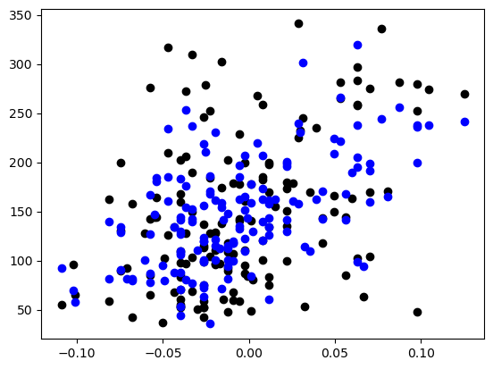

14.1 Automatic feature selection with LASSO regression
In this notebook we will learn how LASSO (Least Absolute Shrinkage and Selection Operator) regression works and how it can assist in automatically selecting which variables should be included using a Cross-Validation perspective.
.. _diabetes_dataset:
Diabetes dataset
----------------
Ten baseline variables, age, sex, body mass index, average blood
pressure, and six blood serum measurements were obtained for each of n =
442 diabetes patients, as well as the response of interest, a
quantitative measure of disease progression one year after baseline.
**Data Set Characteristics:**
:Number of Instances: 442
:Number of Attributes: First 10 columns are numeric predictive values
:Target: Column 11 is a quantitative measure of disease progression one year after baseline
:Attribute Information:
- age age in years
- sex
- bmi body mass index
- bp average blood pressure
- s1 tc, total serum cholesterol
- s2 ldl, low-density lipoproteins
- s3 hdl, high-density lipoproteins
- s4 tch, total cholesterol / HDL
- s5 ltg, possibly log of serum triglycerides level
- s6 glu, blood sugar level
Note: Each of these 10 feature variables have been mean centered and scaled by the standard deviation times the square root of `n_samples` (i.e. the sum of squares of each column totals 1).
Source URL:
https://www4.stat.ncsu.edu/~boos/var.select/diabetes.html
For more information see:
Bradley Efron, Trevor Hastie, Iain Johnstone and Robert Tibshirani (2004) "Least Angle Regression," Annals of Statistics (with discussion), 407-499.
(https://web.stanford.edu/~hastie/Papers/LARS/LeastAngle_2002.pdf)
['age', 'sex', 'bmi', 'bp', 's1', 's2', 's3', 's4', 's5', 's6']
Select subset of data
To speed up calculation, we’re going to just use the first 150 observations using numpy slice notation to grab them out of the X, y
# Create linear regression objectmodel_ols = linear_model.LinearRegression()# Train the model using the training setsmodel_ols.fit(X, y)# Make predictions using the testing sety_hat = model_ols.predict(X)# The coefficientsprint("Coefficients: \n", model_ols.coef_)# The mean squared errorprint("Mean squared error:", mean_squared_error(y, y_hat))# The coefficient of determination: 1 is perfect predictionprint("Coefficient of determination:", r2_score(y, y_hat))
Coefficients:
[ -67.3322587 -369.98803486 445.91969019 324.49756622 89.12828579
-370.37260059 -263.56792004 123.19006966 579.0388831 89.90418524]
Mean squared error: 2662.075876125911
Coefficient of determination: 0.5298596601593836
Do it again in the econometrics style
Recall that the package statsmodels is closer to the econometrician’s way of doing things. We’re going to quickly repeat the steps above but with Statsmodels so we can view it in a nice table form.
Let’s also plot y and y_hat compared to one of the most important variables, BMI. We’ll see both y and y_hat resemble each other.
Code
# Plot outputs (comparing 1 variable (BMI in column 3) to y and y_hatplt.scatter(X[:, 3], y, color="black")plt.scatter(X[:, 3], y_hat, color="blue")
<matplotlib.collections.PathCollection at 0x1a2e0cf3b50>

14.2 Switch to LASSO
Now that we’ve spent all this time setting up our python environment and getting sklearn, it’s almost a trivial step in many cases to try out the latest-and-greatest model.
Create a LASSO model object
Today’s goal, however, is to do Lasso on this same dataset. To start, lets create a Lasso object. Notice that we are not setting the alpha/gamma value when we create it.
Code
model_lasso = Lasso(alpha=1.0, random_state=0, max_iter=10000) # Note, alpha is set by default to 1.0 so we could have omitted it here (though I kept it in to make it clear)print(model_lasso)
Use a loop to identify the best value of alpha, as measured by r-squared.
Write all of the alphas and associated r2 into a dictionary
Discussion question for once you’re done: what was the optimal alpha and why does this make sense? How does this compare to OLS? Why is it that way?
# Starter code: keyt parts omitted.scores = {}alphas = np.logspace(-5, -0.05, 30)for SOMETHING in SOMETHING_ELSE: model_lasso = Lasso(alpha=alpha, random_state=0, max_iter=10000)# LINE OMIITTED# LINE OMIITTED r2 = r2_score(y, y_hat_lasso)print('R2 for alpha '+str(alpha) +': '+str(r2)) scores.append(r2)# Quick way to get the value from the highest-valued dictionary entrybest_alpha =max(scores, key=scores.get)
14.4 Exercise 1 Answer
Code
# Exercise 1 Answer Codescores = {}alphas = np.logspace(-5, -0.05, 30)for alpha in alphas: model_lasso = Lasso(alpha=alpha, random_state=0, max_iter=10000) model_lasso.fit(X, y) y_hat_lasso = model_lasso.predict(X) r2 = r2_score(y, y_hat_lasso) scores[alpha] = r2# Quick way to get the value from the highest-valued dictionary entrybest_alpha =max(scores, key=scores.get)print('best_alpha', best_alpha)
best_alpha 1e-05
14.5 Operationalizing CV with GridSearch
It seems a little weird to be automatically finding the best model. If we were just applying this to the dataset a single time, this would indeed be p-hacking to the extreme. However, showing its performance on UNSEEN data is quite the opposite of p-hacking.
Here, we’re going to operationalize our method for finding th ebest model by using GridSearch. We are going to test a variety of different alphas, similar to above. Define them here using numpy logspace:
We are going to be passing this range of tuning parameters to a GridSearch function that will test which works best when cross-validation methods are applied. First though, we have to put the alphas into the form the GridSearchCV funciton Expects, which is a list of dictionaries.
Code
tuning_parameters = [{'alpha': alphas}]
Recall that CV works by calculating the fit quality of different folds of the training data. Here we will just use 5 folds. GridSearchCV will automatically implement the folding and testing logic.
Code
n_folds =5
Create the lasso_cv object from the lasso object
Finally, we have all our objects ready to pass to the GridSearchVC function which will Give us back a classifier object. Notice that we’re reusing that model_lasso objectg we created above. The difference is that we will be systematically handing different parameters from the tuning_parameters list into the model_lasso object.
When we call the model_lasso_cv.fit() method, we will iteratively be calling the Lasso.fit() with different permutations of tuned parameters and then will return the classifier with the best CV fit.
In a Jupyter environment, please rerun this cell to show the HTML representation or trust the notebook. On GitHub, the HTML representation is unable to render, please try loading this page with nbviewer.org.
The classifier object now has a variety of diagnostic metrics, reporting back on different folds within the Cross Validation. Take a look at them below.
With your table, explore the scores and alphas lists we’ve created. Identify which alpha is the best, based on the MSE score returned. A challenge here is that sklearn gave us the scores as a list rather than a dictionary (as we built above), so you will need to use the list to create the dictionary.
One way to consider doing this would be to create a for loop to iterate through a range(len(scores)): object, saving the alphas and scores to a new dictionary, as in the starter code below.
Save the optimal alpha as a new variable called chosen_alpha.
output_dict = {}for i in OMITTED_CODE: output_dict[alphas[i]] = scores[i]best_alpha =max(output_dict, key=output_dict.get)print('best_alpha', best_alpha)
Coefficient age was -26.874103620938673
Coefficient sex was -318.0780845318727
Coefficient bmi was 427.4732430327188
Coefficient bp was 272.2957071277454
Coefficient s1 was -0.0
Coefficient s2 was -181.31265355198863
Coefficient s3 was -262.371841059376
Coefficient s4 was 0.0
Coefficient s5 was 613.1493262893765
Coefficient s6 was 71.09561386767885
This process led us to the following selected_coefficient_labels: